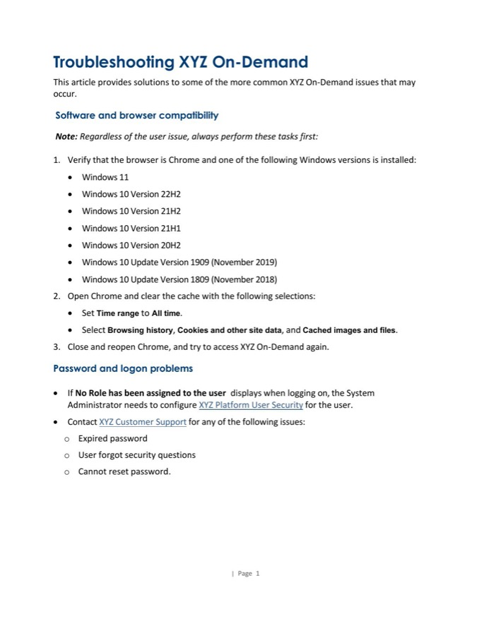
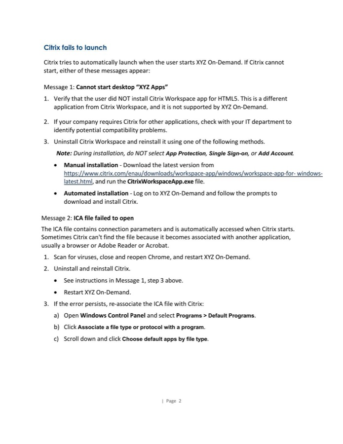
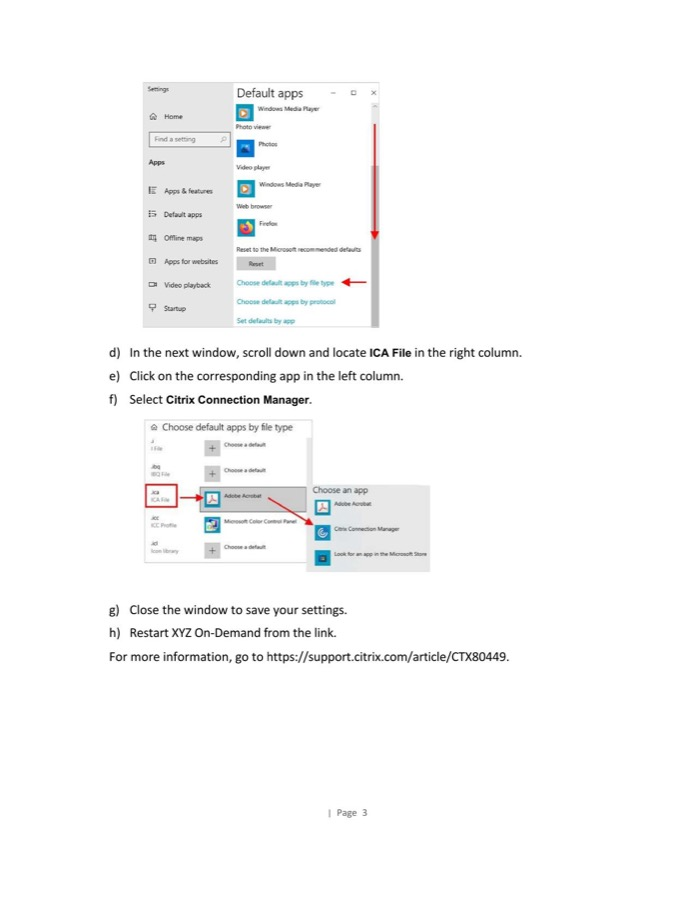
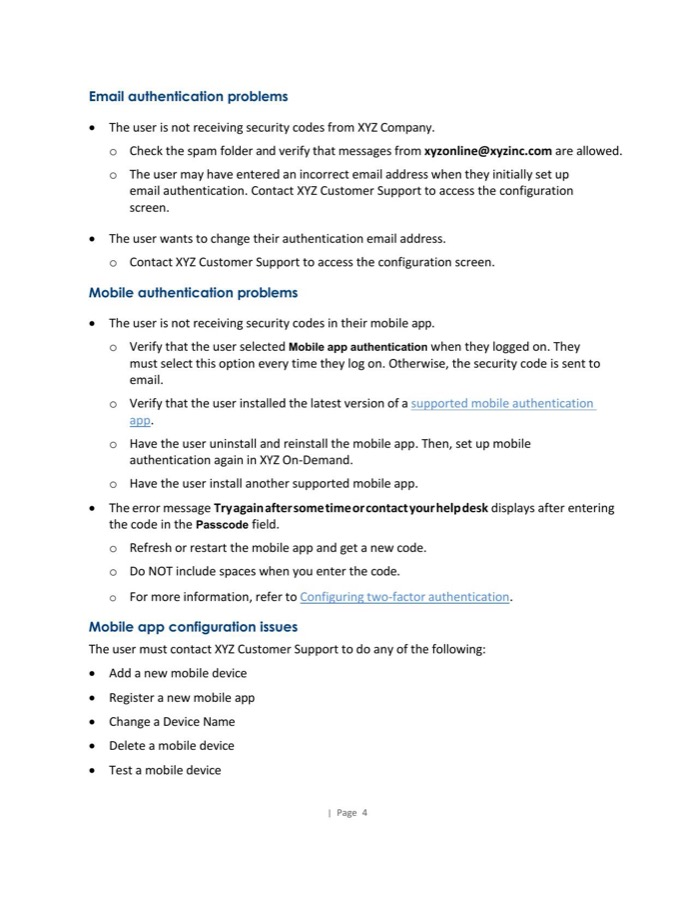

This is a self-service troubleshooting guide I created for end-user administrators of an application that runs on Citrix Virtual Desktop. I worked with our internal support team to identify and provide solutions to the most common problems.
The guide covers software and browser compatibility checks, password and logon problems, Citrix launch failures, email and mobile authentication issues, and mobile app configuration, organized so a user can jump straight to their symptom instead of reading top to bottom.



